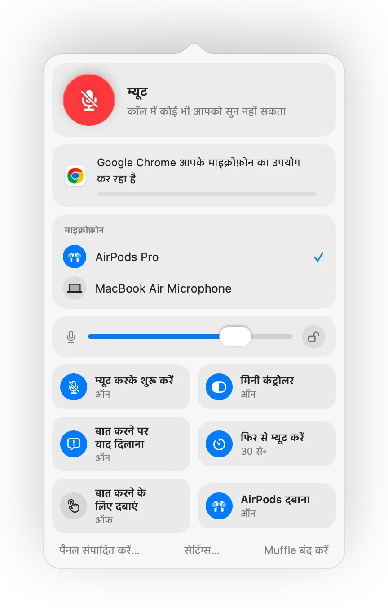

Mac पर अपना माइक्रोफ़ोन कैसे म्यूट करें
Mac पर माइक्रोफ़ोन के लिए कोई ख़ास म्यूट की नहीं होती। ऐप और स्थिति के आधार पर आपके पास कुछ विकल्प होते हैं, और उनमें से केवल कुछ ही हर जगह काम करते हैं।
आपके पास उपलब्ध विकल्प
- 1
कॉल ऐप का अपना बटन या शॉर्टकट। यह केवल उसी ऐप में काम करता है, और वह भी सिर्फ तब जब वह ऐप सामने खुला हो।
- 2
सिस्टम सेटिंग्स, ध्वनि, इनपुट। इनपुट लेवल को शून्य पर खींचना हर माइक के लिए असली म्यूट नहीं होता, और ऐप इसे फिर से बढ़ा सकते हैं।
- 3
Muffle के साथ एक ग्लोबल शॉर्टकट। एक ही की हर ऐप में सीधे माइक्रोफ़ोन को म्यूट कर देती है।
- 4
आपके AirPods। Muffle के साथ, स्टेम दबाने पर कोई भी कॉल म्यूट हो जाती है, जिसमें Chrome में Google Meet भी शामिल है।

- माइक बंद होने पर Muffle का मेनू बार आइकन लाल हो जाता है, चाहे आप किसी भी ऐप में हों।
- Muffle बंद करने पर आपका माइक्रोफ़ोन हमेशा वापस ऑन हो जाता है।
अक्सर पूछे जाने वाले सवाल
क्या Mac में इन-बिल्ट माइक्रोफ़ोन म्यूट होता है?
पूरे सिस्टम के लिए ऐसा नहीं होता। macOS केवल उन ऐप्स के अंदर माइक म्यूट करता है जो इसे सपोर्ट करते हैं। Muffle एक असली सिस्टम-वाइड म्यूट जोड़ता है।
क्या Muffle में म्यूट करने से हर ऐप म्यूट हो जाता है?
हाँ। Muffle हार्डवेयर स्तर पर हर माइक्रोफ़ोन को बंद कर देता है, इसलिए जब तक आप अनम्यूट नहीं करते, कोई भी ऐप आपकी आवाज़ नहीं सुन सकता।